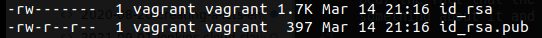
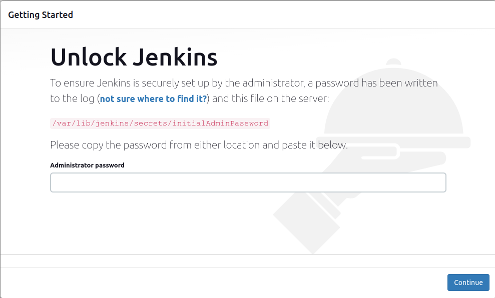
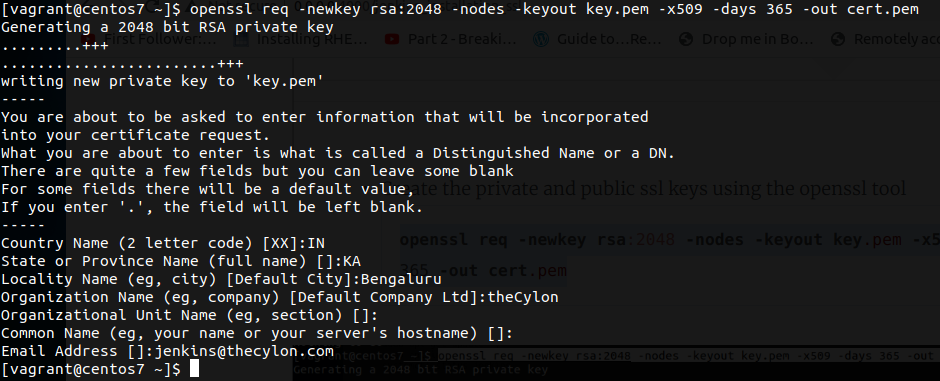
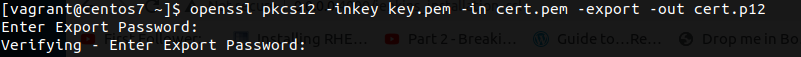
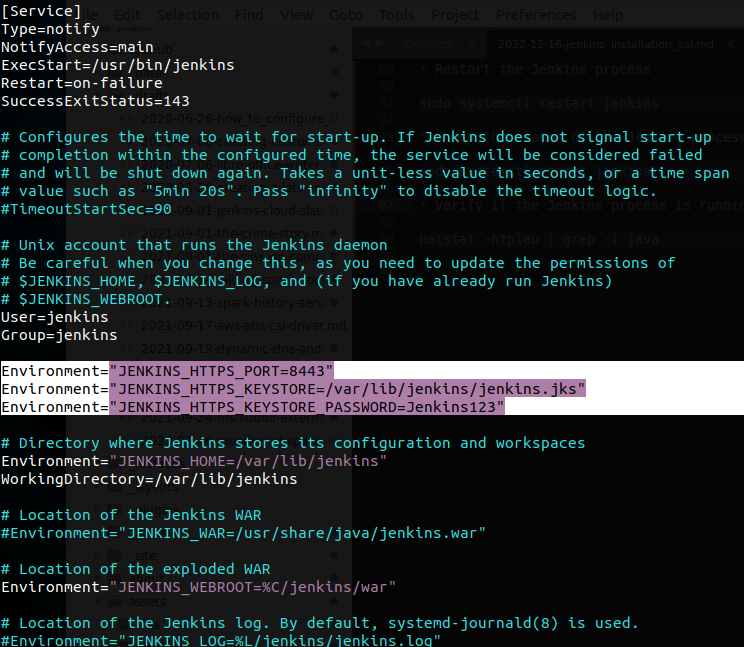

It has been quiet sometime since I got my hands dirty, so here we go today!! Recently we had a use-case where we needed to setup a Jenkins server on a public network for some POC and we as DevOps could not bear the fact that the traffic exiting from our network is in plain text. Hence we wanted to do something about it and we would like to share our view point on how did we achieved this goal.
For successfully testing this, we have the below pre-requisites:
- Operating system: Ubuntu 20.04
- Administrator or sudo access to the server
- Open Internet connectivity to ensure package installation go through
A high level set of the steps involved will be:
- Generation of ssh keys followed by the verification of the generated files
- Updating the apt cache
- Installing the required packages
- Validating the Jenkins process is running and enabled in systemd
- Creating public and private SSL keys using openssl tool
- Getting started with the Jenkins UI and plugins installations
Install Jenkins
Follow the below steps to install Jenkins on your server
- Generate SSH keys
ssh-keygen - Verify the generated key files
ls -ltr ~/.ssh
- Now that the ssh keys have been validated we can go ahead and install Jenkins alons with it’s dependencies using the below commands
wget -q -O - https://pkg.jenkins.io/debian-stable/jenkins.io.key | sudo apt-key add - sudo apt-add-repository "deb https://pkg.jenkins.io/debian-stable binary/" sudo apt-get update -y sudo apt install git vim telnet curl wget tree default-jdk jenkins openssl nginx -y systemctl status jenkins -
Verify the Jenkins Installation by going to the browser on port 8080 
- Create the private and public ssl keys using the openssl tool
openssl req -newkey rsa:2048 -nodes -keyout key.pem -x509 -days 365 -out cert.pem
- Convert the generated keys into a .p12 keystore, it will ask for a password. For the sake of convenience I will be setting them as Jenkins123
openssl pkcs12 -inkey key.pem -in cert.pem -export -out cert.p12
- Importing the .p12 using the keytool utility to a destination keystore with the name jenkins.jks with the destination store type as JKS
keytool -importkeystore -srckeystore ./cert.p12 -srcstoretype pkcs12 -destkeystore jenkins.jks -deststoretype JKS - Copy the jenkins.jks to a location which is accessible by the Jenkins process and also change the owner and group of the file ot jenkins
sudo cp jenkins.jks /var/lib/jenkins/ sudo chown jenkins:jenkins /var/lib/jenkins/jenkins.jks - Edit the Jenkins systemd file
sudo vim /usr/lib/systemd/system/jenkins.service - And add the below 3 lines as shown in the image
Environment="JENKINS_HTTPS_PORT=8443" Environment="JENKINS_HTTPS_KEYSTORE=/var/lib/jenkins/jenkins.jks" Environment="JENKINS_HTTPS_KEYSTORE_PASSWORD=Jenkins123"
- Reload the systemctl daemon as there has been a change in the service file
sudo systemctl daemon-reload - Restart the Jenkins process
sudo systemctl restart jenkins - Check the status of the Jenkins process
sudo systemctl status jenkins - Verify if the Jenkins process is running on https. We will see the app running on port 8443 as well
netstat -ntplau | grep -i java
This ensures Jenkins runs on SSL, now we would need to setup a reverse proxy using nginx to serve the traffic.